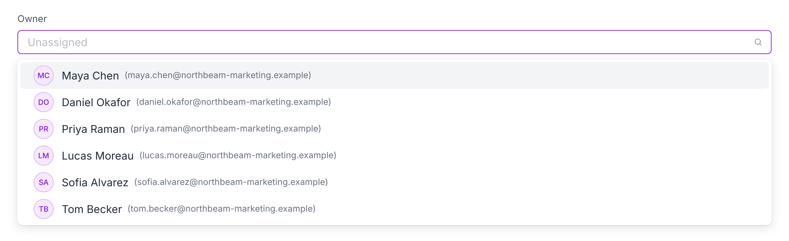
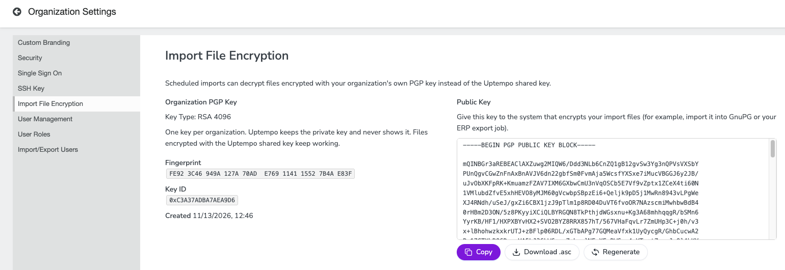

What's new: 2026.11
Discover all the new Uptempo features introduced with the 2026.11 release, available from November 26, 2026.
Campaign Management: Activities
See who owns each activity
Activities now have an Owner, so you know who to contact with questions about an activity.
Owner by default: The user who creates an activity becomes its owner. Anyone who can edit the activity can change the owner to another active user.
Configurable: Not every activity needs an owner, so admins choose which activity types show the Owner field, and whether it's required. It's on by default for new activity types and off for existing ones.
Filter, group, and track: Filter and group activities by owner, and see owner changes in the audit trail.
Report and integrate: BI exports include Activity Owner and Activity Owner email columns. The Uptempo API includes the owner as an email address, and import and export tools include the owner.
Route approvals by owner: Use the owner to route activity approval requests.


Fixes and behavior changes
Submit is now Publish: On the last step of the activity setup assistant, the Submit button is now called Publish, so it's easier to tell apart from Save as Draft and Submit for approval.
Campaign Management: Activity approvals
Send approval requests through multiple steps
Approval processes can now route each request through up to five approvers in order, so senior approvers review only what earlier approvers have already signed off on.
Build an approval chain: Add up to five approval steps to a process, name each one (for example, Manager and Director), and choose how its approver is determined.
Approve in order: Each approver sees the request only after the one before approves. The final approval makes the request Approved, and a denial at any point makes it Denied.
Nothing is skipped: When no approver is eligible, the request goes to the default approver instead.
See the route: Submitters see the full approval route before they confirm, and the request's approval history shows who is up now and who is next.
Bulk approvals and emails follow the route: Approving in bulk moves each request forward by one approver, and approvers are emailed when a request reaches them.

Route approval requests by activity owner
Approvers can now be determined by the activity's owner instead of the submitter, so a request reaches the right approver even when a colleague submits it.
Map activity owners to approvers: Upload an activity owner-to-approver mapping (CSV template provided) to route requests automatically.
Routes the same whoever submits: Uptempo records the activity owner when the request is submitted. If the owner changes afterward, the request stays with its original approvers.
Mix sources in one process: Determine approvers by activity owner, submitter, or selected by submitter on different steps of the same process.
Never blocked: A missing, unmapped, or inactive owner sends the request to the default approver.

Guide submitters when their approver isn't listed
When submitters choose their own approver, they can select only users with edit access to the activity. When the approver they need isn't listed, submitters now see what to do next.
Help in the submit dialog: When a search has no match, submitters see a Can't find your approver? message. The message is also available when the search returns results.
Customize the message: Admins can edit the text (up to 300 characters) and add a link, for example to an internal access request form. A preview shows what submitters see.
Default included: Until you customize it, the message explains that approvers need edit access to the activity, and tells submitters to contact their Uptempo administrator. Reset to default restores it.

→ Learn more about customizing the approver not listed message
→ Learn more about submitting when your approver isn't listed
Financial Management: Imports
Sign in to SFTP servers with an SSH key
Scheduled imports can now sign in to your SFTP server with your organization's SSH key instead of a password, including servers that only accept key sign-in.
Generate your organization's key: In Organization Settings > SSH Key, company admins can generate a key and copy the public key. Add it to the authorized keys of the SFTP user that you upload files with.
Choose a sign-in method for each schedule: When you add or edit an SFTP scheduled import, select SSH Key under Authentication. Password stays the default.
Existing schedules keep working: Schedules that sign in with a password don't need any changes.
Regenerating replaces the key right away: When you regenerate the key, the previous key stops working immediately. Add the new public key to your SFTP server to keep your schedules running.

Manage your own PGP key for encrypted imports
You can now generate your organization's own PGP key to encrypt files for scheduled imports, instead of using only the Uptempo shared key.
Generate and share your public key: In Organization Settings > Import File Encryption, company admins can generate a key, then copy it or download it as an
.ascfile for the system that encrypts your import files.The Uptempo shared key still works: Files encrypted with the Uptempo shared key continue to import, so existing schedules don't need any changes.
30 days to switch after you regenerate: When you regenerate your key, the previous key keeps decrypting files for 30 days. The settings page shows the date it stops.
Clearer error messages: If a file was encrypted with a key that doesn't match, the schedule event log tells you which key the file used.


→ Learn more about decrypting import files with your PGP key
Financial Management: Investments
Add line items in a modernized form
The redesigned form for adding a line item to an investment plan now replaces the previous form for all customers.
Faster to use: The form responds more quickly as you fill it in.
A consistent look: The form looks and behaves like the equivalent screens in Campaign Management.
Required fields stand out: Required fields show a red asterisk next to the field name.

Organization Settings
Require single sign-on
Admins can now require all users to sign in with single sign-on (SSO) with the new Require Single Sign-On option.
Optional, and off by default: With only Enable Single Sign-On selected, users can sign in with SSO or with a username and password.
Enforce SSO: With both options selected, users can no longer sign in with a username and password.
Admins and API users keep password access: Admins can still sign in with a password as a fallback, and API users can still use the client credentials flow to access their data.

Uptempo Public API
Read user access and roles through the API
You can now read who can access which budgets, and with which role, through the Uptempo API, so you can audit access without maintaining your own lookup tables.
Look up a user: Get a user's email, organization roles, and the budgets they can access, with their role on each. Company admins can look up any user. Other users can look up only themselves.
Look up a budget: Get the users on a budget, with their email and role. You need read access to the budget.
Protected by design: A user or budget you can't access returns the same response as one that doesn't exist, so the endpoints can't be used to list records you aren't entitled to see.
Fixes and behavior changes
New activities fill single-option dependent attributes: When you create an activity through the API or an import, and a value on a parent activity leaves only one valid option for a multi-level dependent attribute, Uptempo now fills that option, as the create wizard does. If your request sends the attribute empty, it stays empty.
Exchange rates no longer include calculated columns:
GET /budgets/{budgetId}/column-exchange-ratesnow returns only currency columns. Calculated columns can combine columns with different rates, so they were removed from the response.